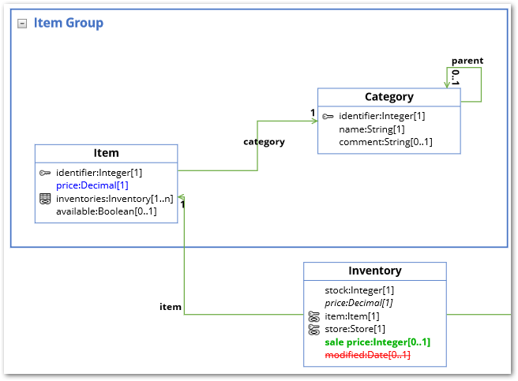

Without configuring anything, the add-on can render a new data model graph. Simply open a data model, dataset, or table Actions menu and select Display data model under Visualization. If the option has been enabled by an administrator, you can choose which tables are rendered in the graph. See Changing display and configuration options for information on configuring this option. When you run the service from a:
Data model or Dataset: The table from the current model or dataset with the most links is centered in the graph.
Table: The table is centered in the graph.
You can expand, collapse, determine display of, and rearrange graph components. Once satisfied with the appearance, use the Save button at the bottom of the graph to store the current layout and settings. As shown below, you can use the Load button to load a saved graph. When more than one saved graph of the current model exists, select the desired graph and click Generate at the bottom-right of the screen.
If the loaded graph's underlying data model contains changes since its last save, the add-on allows you to choose whether to synchronize the graph. See Visualizing changes to models for more information on synchronization.
If you are loading a graph after a change has been made to the underlying data model, a pop-up dialog displays and allows you to choose whether to update the graph. As shown below, updated graphs highlight new items in green, changed items in blue, and deleted items in red:
If you do not have sufficient permission to view any tables in a given dataset, the Display data model service will not display. If there are certain tables or fields you are restricted from viewing, they do not display when you generate a data model graph.